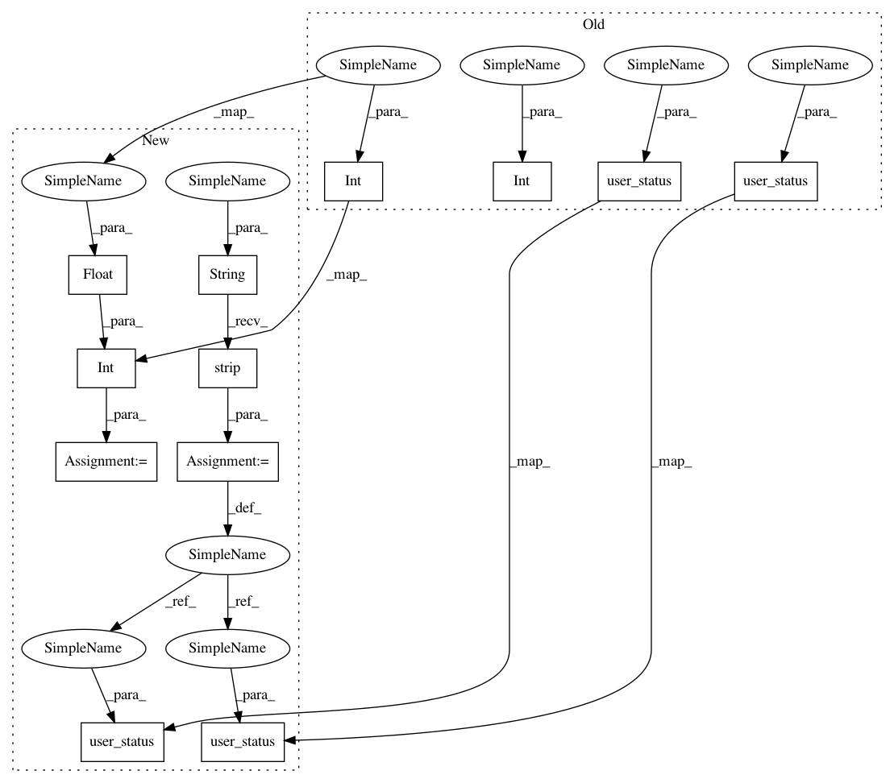

1c66ac57e58b3435d61e8d250d0b675952b797d7,dino/cache/redis.py,CacheRedis,set_user_offline,#CacheRedis#Any#,725
Before Change
def set_user_offline(self, user_id: str) -> None:
try:
self.cache.set(RedisKeys.user_status(user_id), UserKeys.STATUS_UNAVAILABLE)
self.redis.setbit(RedisKeys.online_bitmap(), int(user_id), 0)
self.redis.srem(RedisKeys.online_set(), int(user_id))
self.redis.srem(RedisKeys.users_multi_cast(), user_id)
self.redis.set(RedisKeys.user_status(user_id), UserKeys.STATUS_UNAVAILABLE)
except Exception as e:
logger.error("could not set_user_offline(): %s" % str(e))
logger.exception(traceback.format_exc())
After Change
def set_user_offline(self, user_id: str) -> None:
try:
user_id_str = str(user_id).strip()
user_id_int = int(float(user_id))
self.cache.set(RedisKeys.user_status(user_id_str), UserKeys.STATUS_UNAVAILABLE)
self.redis.setbit(RedisKeys.online_bitmap(), user_id_int, 0)
self.redis.srem(RedisKeys.online_set(), user_id_str)
self.redis.srem(RedisKeys.users_multi_cast(), user_id_str)
self.redis.set(RedisKeys.user_status(user_id_str), UserKeys.STATUS_UNAVAILABLE)
except Exception as e:
logger.error("could not set_user_offline(): %s" % str(e))
logger.exception(traceback.format_exc())
In pattern: SUPERPATTERN
Frequency: 3
Non-data size: 12
Instances
Project Name: thenetcircle/dino
Commit Name: 1c66ac57e58b3435d61e8d250d0b675952b797d7
Time: 2018-09-03
Author: oscar.eriks@gmail.com
File Name: dino/cache/redis.py
Class Name: CacheRedis
Method Name: set_user_offline
Project Name: thenetcircle/dino
Commit Name: 1c66ac57e58b3435d61e8d250d0b675952b797d7
Time: 2018-09-03
Author: oscar.eriks@gmail.com
File Name: dino/cache/redis.py
Class Name: CacheRedis
Method Name: set_user_online
Project Name: thenetcircle/dino
Commit Name: 1c66ac57e58b3435d61e8d250d0b675952b797d7
Time: 2018-09-03
Author: oscar.eriks@gmail.com
File Name: dino/cache/redis.py
Class Name: CacheRedis
Method Name: set_user_offline
Project Name: thenetcircle/dino
Commit Name: 1c66ac57e58b3435d61e8d250d0b675952b797d7
Time: 2018-09-03
Author: oscar.eriks@gmail.com
File Name: dino/cache/redis.py
Class Name: CacheRedis
Method Name: set_user_invisible